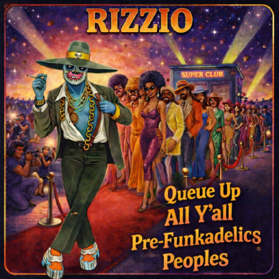

Uh-huh, ahh hah! ooh yeah!
Good God, 2, 3, 4
I ain't sayin I ain't playin nothin
But somethin I am doin
Is goin thru and delving into
The glorious past full mast
Fly da Funkadelic flag past tracks
I'll be COMIN ROUND THE MOUNTAIN when I come
Riding two white whores' when I come
Cummin' round the mountain when I come
Riding two black bitches when I come
I'm from the Lon-Town
People what you doin?
STANDING ON THE VERGE OF GETTING IT ON
Come on come on hit me
I'm comin for da LOOSE BOOTY
THAT WAS MY GIRL and her SEXY WAYS
VITAL JUICES GOOD THOUGHTS BULLSHIT THOUGHTS
Go thru my mind BE MY BEACH is da
FREAK OF THE WEEK but not just KNEE DEEP
Sir Nose can never get to sleep
We'd love to take you
CHOLLY when you go
OH I, oh I, oh, oh, oh, oh, oh, oh I
Oh I, oh I, oh, oh, oh, oh, oh, oh
I OWE YOU SOMETHING GOOD
You should GET OFF YOUR ASS AND JAM
Like ALICE IN MY FANTASIES
She's a freaky G
But she's a friend of the drummer
A sexy freaky young lass
Backdoor man said
NO HEAD NO BACKSTAGE PASS
I looked in da lookin glass and saw
RED HOT MOMMA from Louisiana
Got a touch of LUNCHMEAT-APHOBIA
But I'm never gonna show biatch
I'M NEVER GONNA TELL IT
But she ain't shit
so I told her if you ain't gonna get it on
TAKE YOUR DEAD ASS HOME
I'll get mine in yo home
IF YOU GOT FUNK YOU GOT STYLE
So I'LL STAY for a little while for some
ONE NATION UNDER A GROOVE
Have me some holy SMOKEY baby
I THINK IT AIN'T ILLEGAL YET!
I'LL BET YOU if you can get
CAN YOU GET TO THAT
Or you'll HIT IT AND QUIT IT then
FREE YOUR MIND AND YOUR ASS WILL FOLLOW
I have never in my life but I'll lead and you'll follow
I WANNA KNOW IF IT'S GOOD TO YOU baby but
IF YOU DON'T LIKE THE EFFECTS DON'T PRODUCE THE CAUSE
Because it's A WHOLE LOT OF B.S.
Within A JOYFUL PROCESS
When you get undressed
Sending out a distress
S.O.S MAY DAY or may first or
May'pril, (May'pril) day
And i'm comin INTO YOU now
So i'll protect my neck
And use some SOUL MATES
So please partake of nastic follies
And venture forth in HARDCORE JOLLIES
It may just be a BIOLOGICAL SPECULATION
But your BUTT-TO-BUTTRESUSCITATION
Was like the WARS OF ARMA-GEDDON
You come head on to me so now
I CALL MY BABY PUSSYCAT
So LET'S MAKE IT LAST, ooo
Let's make it good I got enough
FUNKY DOLLAR BILLS U.S dollar bills
And BETTER BY THE POUND
We'll go out on the town
But don't frown we'll listen to some
GOOD OLD MUSIC on FRIDAY NIGHT AUGUST the FOURTEENTH
Old lady luck smiled down on me
When i'm on the dancefloor
Mackin to PHILMORE
Let me talk to you for a while
She smiled and said
"All looks are not alike
All Hoes are not on crack"
In other words NO COMPUTE
We'll stay mute
Cos rappin will get you nowhere on the dancefloor
So I said would you like to dance with me
We're doin the COSMIC SLOP
She was bemused her head dropped
She couldn't refuse heads I win tails you lose
But that's on a different tip
For now concentrate on my ICKA PRICK
You cute-ass chick i'll send SHOCKWAVES
Thru your spine cos Rizzio's always on time